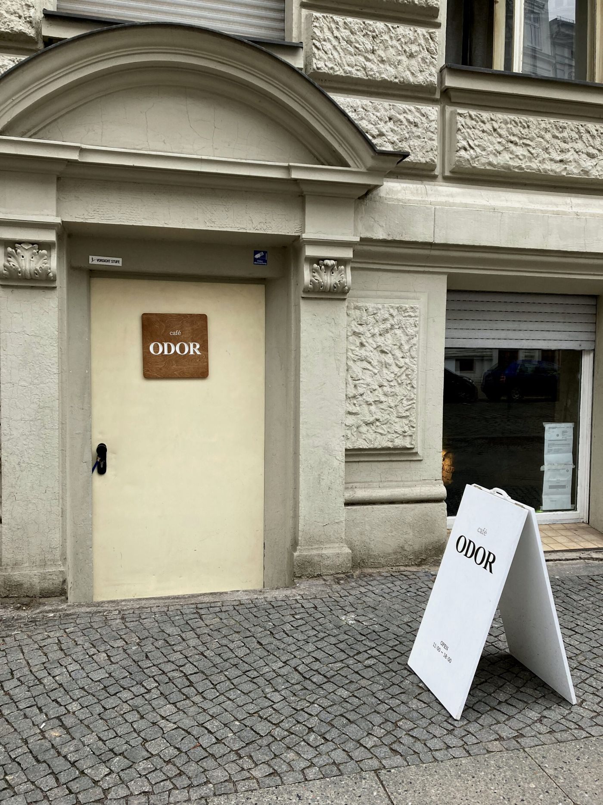

Spielplatz
Nachmittag auf der Luiseninsel
Nachmittags. Ein Spielplatz und ein Platz zum Sitzen.
Essen. Café ODOR, Kurfürstenstraße 21–22. Kleines Café im Souterrain, nach dem Sand. Der Beitrag von 2023 beschreibt Sauerteigbrot und Brunch. Öffnungszeiten
Stopps
- Spielplatz Luiseninsel

Kiez mit Kind: Der Spielplatz Tiergarten Luiseninsel - Café ODOR Öffnungszeiten

Café ODOR
Gelesen
Zu diesem Spielplatz gibt es einen Beitrag, vom 15. Juli 2024, und er ist genau. Der Kiez sei an Parks privilegiert: im Norden der Tiergarten, im Osten der Gleisdreieckpark, dazwischen grüne Inseln. Der Spielplatz an der Luiseninsel sei einer der Lieblinge. Rutschen für alle Alter, Schaukeln, Klettergerüste für jede Größe und jeden Mut, im Sommer eine Wasserpumpe mit eigenem Matsch-Sand-Bereich und Bagger, Platz für Ballspiele, viel Sand. Für die Kleinsten ein eigener Bereich, eine breite Rutsche, auf der zwei oder drei Kinder nebeneinander sitzen, selten mit Stau. Den überdachten Start erreicht man über eine Schräge, eine Leiter oder einen beidseitig gesicherten Steg, der manchmal das Highlight des Tages ist. Zwei bodennahe Hangelseile, ein beweglicher Sandeimer an der Kette. Zwei Bänke mit Blick auf die Rutsche, und die zwei kleinen Stufen zum Spielplatz hinunter, an der langen Seite zum Sitzen und Mitbacken.
Die mittleren Kinder nehmen die mittlere Rutsche über eine Leiter oder über einen Kletterparcours, den der Text mit Sendungen wie „American Gladiator“ vergleicht. Die große Rutsche nur über den Turm. Eine Nestschaukel, an der man sich zur Rushhour anstellt oder sie teilt, daneben zwei normale Schaukeln, und eine Kletterspinne, von der aus man den ganzen Platz übersieht. Bis auf zwei Eingänge ein hüfthoher Zaun. Mitten im Tiergarten geben die Bäume auch im heißesten Sommer Schatten. Im Frühling und Herbst hält das Laub einzelne Tropfen auf. Im Winter lassen immergrüne Pflanzen den Platz nicht trostlos aussehen. Ein Großteil der Geräte sei in den letzten zehn Jahren neu gebaut worden. Einzig die Kletterspinne stehe seit den neunziger Jahren, „Zeugin“ von jahrzehntelangem Spiel direkt hinter der Philharmonie.
Das einzige Manko, das der Beitrag nennt: es gibt quasi keine Verpflegung in der Nähe oder auf dem Weg. Im Sommer Wasser einpacken, für einen langen Tag. Einige Bänke taugen zum Picknick. Familien legen Kindergeburtstage und das Ende einer Schnitzeljagd hierher.
Gegessen wird deshalb erst danach, und das steht in einem anderen Stück. Am 23. Januar 2023 beschreibt mittendran das Café ODOR: drei Stufen hinunter ins Souterrain der Kurfürstenstraße 21/22, ein kleiner Raum, ein paar Tische, Stühle, zwei Sofas, der Tresen im Raum dahinter. Überwiegend internationale, junge Gäste, freundliches Personal. Auf der kleinen Karte hausgemachtes Gebäck, Bananenbrot zu 3,50 Euro, vegetarischer Brunch. Das Sauerteigbrot mit Avocado, Kresse, Rucola, Sonnenblumenkernen, Pesto und auf Wunsch Rührei zu 12,50 Euro. Espresso macchiato 2,80, Café Latte 3,40, Tees Yuzu/Pflaume 3,50, Earl Grey Milk Tea 4,00, heiße Schokolade mit Marshmallows 3,50. Das Mineralwasser kommt mit einem Minzezweig. Die beiden Betreiberinnen kommen aus Korea und führen das Café seit Mitte Juli 2022. Geöffnet, in diesem Beitrag, Dienstag bis Samstag 11 bis 18 Uhr, Montag und Sonntag geschlossen. Ob das noch gilt, steht hier nicht.